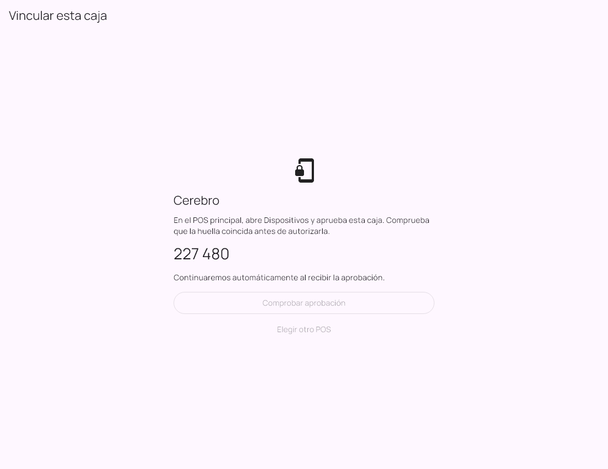

Manual de usuario
Windows y Android
Tenkai MultiPos
De la preparación a la operación diaria. Elige un tema o sigue la guía en orden.
Las opciones pueden variar según la edición, los permisos y la versión instalada.
01 / 10
Preparar la caja principal
Cada terminal ocupa un cupo del módulo MultiCaja.
- Activa MultiCaja en POS con una licencia compatible.
- Revisa el número de cajas autorizadas.
- Configura los usuarios y permisos de cada cajero.
- Deja la computadora principal abierta y conecta las terminales a la misma red.
02 / 10
Vincular la terminal
Aprueba únicamente el dispositivo que acabas de preparar.
- Instala la aplicación compatible en la tablet o PC.
- Abre MultiPos y localiza la caja principal.
- Solicita la vinculación.
- Aprueba el dispositivo en POS.
- Selecciona el usuario e inicia sesión.
- Espera la descarga del catálogo y confirma el estado de conexión.


Ampliar pantallaLa caja solicita autorización al POS principal.
Pantallas de las aplicaciones con datos de demostración. La apariencia y las opciones pueden variar según versión, edición y permisos.
03 / 10
Abrir el turno de la terminal
Cada cajero trabaja en la caja que le corresponde.
- Revisa que la conexión sea correcta.
- Abre el turno y registra su fondo inicial cuando se solicite.
- Comprueba que el catálogo y la sesión estén disponibles.
- Prepara una compra de prueba antes de atender clientes.
04 / 10
Preparar tickets y cobrar
Usa las funciones habilitadas por el POS principal.
- Escanea o busca el producto.
- Ajusta cantidad y presentación y revisa los precios.
- Selecciona cliente o descuento cuando corresponda y esté autorizado.
- Abre el cobro y registra la forma de pago.
- Confirma una vez y verifica el comprobante.
05 / 10
Consultar y reimprimir
El comprobante corresponde a la venta guardada.
- Abre la consulta de comprobantes del cajero.
- Selecciona la venta y revisa su estado.
- Reimprime cuando sea necesario.
06 / 10
Continuar una caída breve
Requiere versión compatible, catálogo preparado y autorización vigente.
- Revisa el aviso de desconexión y la ventana de contingencia disponible.
- Conserva la misma sesión y el ticket.
- Trabaja solo con las funciones que la pantalla permite.
- Recupera la conexión para enviar y confirmar las operaciones pendientes.
07 / 10
Si un cobro espera confirmación
Primero recupera el resultado de esa operación.
- Conserva el ticket y el registro pendiente.
- Recupera conexión con el mismo POS.
- Espera la recuperación automática y comprueba el comprobante.
- Consulta soporte si permanece pendiente.
08 / 10
Cerrar el turno
Una terminal puede guardar su cierre pendiente cuando la instalación lo permite.
- Revisa operaciones pendientes.
- Realiza el arqueo y confirma el cierre.
- Si estás desconectado, recupera la conexión para que primero se confirmen cobros y después el cierre.
- Comprueba el estado final del turno.
09 / 10
Inventario y permisos durante contingencia
La copia local puede no incluir ventas realizadas por otras cajas mientras están separadas.
- Revisa el catálogo descargado y evita asumir que la cantidad visible es la existencia actual de toda la tienda.
- Al reconectar, revisa las incidencias que POS muestre.
- Consulta los permisos antes de aplicar descuentos o cambiar productos.
10 / 10
Actualizar o cambiar de terminal
Conserva la operación pendiente antes de modificar la instalación.
- Confirma cobros y cierres pendientes.
- Solicita una actualización compatible con la principal.
- Respalda según el procedimiento indicado por soporte.
- Prueba vinculación, cobro y comprobantes al terminar.
Ayuda con tu instalación
Si un pendiente no se resuelve, conserva la operación y contacta a Tenkai con el nombre de la aplicación, versión y descripción del problema. Comparte capturas que no muestren accesos ni datos de clientes.
Contactar soporte